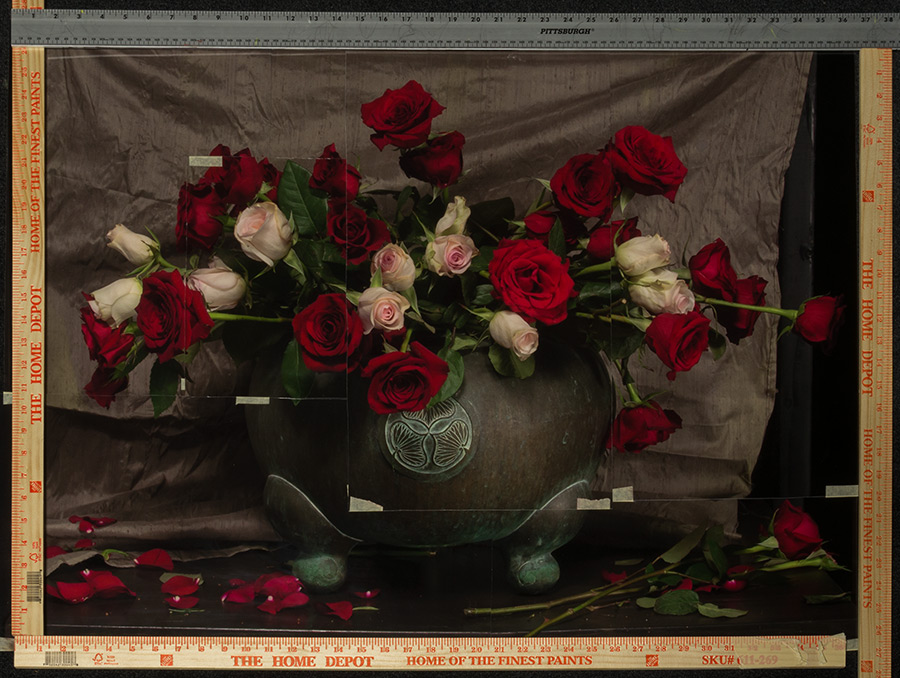

Lay all the photographs of your still life out on a table or on the floor. Arrange them, overlapping if necessary, to create one large image of your still life.

Assuming your photos are the same scale as your painting, simply measure the dimensions of your canvas directly from the large pieced-together image.
Now you can take these measurements and order your stretcher strips or pre-stretched canvas. You will need to round your numbers to the nearest available stretcher strip size or pre-stretched canvas size. In other words, if the width you measured was 19.2 inches, you will need to compromise and make your canvas 20 inches wide instead. Obviously if you are cutting your own stretcher strips you can make them any size you wish.
One note: it never hurts to make your canvas a bit larger than what you measure. I have found with experience that I almost always like the extra room. Especially because you will be painting life-size or larger, you don't want to be forced to "squeeze in" your objects because your canvas is too small. Also, if you frame your finished painting, the frame will cover up a tiny bit of canvas along the edges.
So if you measured 18 inches for the width, it wouldn't hurt to stretch your canvas 20 inches wide, or even 22 inches wide. Keep in mind that if you really want to make your canvas smaller after the painting is finished you can always restretch your still life painting onto shorter stretcher strips.
If you're working from a photo that is smaller than life-size (not recommended), you will need to measure your photo and then multiply the width and the height by a given amount, depending on how big you want your canvas to be.
Unless you will be using a pre-stretched canvas, you will need to stretch your canvas onto stretcher strips, which I demonstrate in this video.
It is much easier to paint on stained canvas than it is to paint on white canvas. Not only is it easier to judge your values, but it is also easier to get full coverage with one coat of paint. Watch the video below to see how I do it. In the video I am using different paint than I currently recommend for the staining process. You can find my current recommendations on the supply list I recommend staining your canvas outside, but if you can't do that, make sure you have very good ventilation.